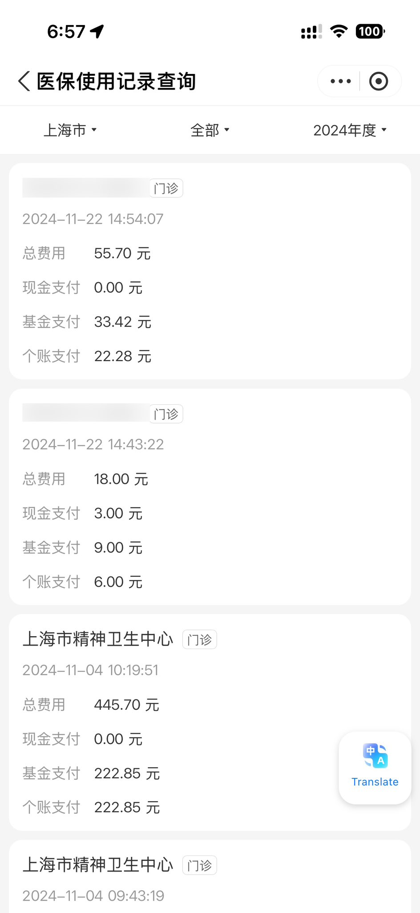

たたなこ🏳️⚧️🍥
@tatanakots
@dajuzi23242526 我是用自己的男证开的，统筹+个帐支付的（没有走其他的报销途径）

橙子喵🏳️⚧️🍥「记录美好时光\生活\犯傻」
@dajuzi23242526
@tatanakots 必须社保医保➕公司所在地区社区医院\三甲医院.给你报销..相当于你走了2到3份报销.你在医院拿药走医保报销.带着证明去公司也行.或者企业和本地社区医院绑定就医.那直接开出来的就是减免以后的药..而且我顺女朋友去开的一个月只能开6到8盒..这个月她就开了2盒.让她吃完在来开...均价差不多7.8一盒左右.